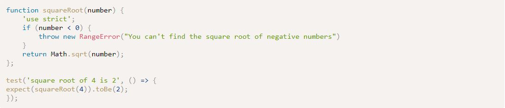

Week 5 Notes & Exercises
I'm leaving my team's work here so I can refer back to it: Great Hikes
Chapter 10: Testing and Debugging
- Usually, errors are caused by one of these three:
- System error: a problem with the system or external devices with which the program is interacting
- Programmer error: incorrect syntax or faulty logic - might even be a typo
- User error: user entered data incorrectly, and the program was unable to handle it
- Programmers can't control system errors usually, but they try to work their way around it
- They are responsible for programmer errors and usually will build the program in a way that can minimize user errors
- Warnings can occur when there's an error that isn't big enough to cause the program to crash
- While this may sound alright to deal with, it's best to give attention to it
- Because JS can be very forgiving when it comes to errors, Strict Mode was introduced to produce more exceptions and warnings and prohibits the use of some deprecated features
- Not using strict mode is referred to 'sloppy mode'
- It is better practice to spot errors earlier on so they won't cause problems later
- To use, add 'use strict'; to the first line of a JS file
- Modules are self-contained pieces of code that are in strict mode by default (you don't need to declare strict mode in them)
- Because new APIs are being developed constantly as part of the HTML5 specification, browser vendors try to keep up with supporting them, but don't always succeed
- Some browsers don't even support certain features
- For these reasons, feature detection can be used
- The recommended way to determine if a browser supports a feature is an if statement
- if (window.holoDeck) { virtualReality.activate(); }
- Modernizr is a library that offers an easy way to implement feature detection
- Error objects can be created by the host environment when an exception occurs, or it can be created in the code using a constructor function
- const error = new Error();
- You can then throw these custom errors using the throw statement
- If you suspect a piece of code will result in an exception, you can wrap it in a try block
- The code will run normally, but if an exception occurs, the error object that is thrown will be passed to a catch block
- It might look like this:
- function doAThing(arg) {
'use strict';
try {
//if no error, this part will run
} catch(error) {
//if there is an error, this part will run }
} - Kind of like an if statement for possible error-inducing parts of the program
- A finally block can then be added after the catch block
- The code inside a finally block will always run regardless of whether an exception happened or not
- Add the block the same way you would add a catch block
- The code will run normally, but if an exception occurs, the error object that is thrown will be passed to a catch block
- The process of TDD (test-driven development) starts with writing the tests before the code
- The whole process results in this workflow:
- Write tests (they will initially fail because there's no code to test)
- Write code to pass the tests
- Refactor the code (make it faster, more readable, remove repetition)
- Test refactored code
- Write more tests for new features
- While considered best practice, it's hard to always use this mindset; however, any test is better than none at all
- The whole process results in this workflow:
- There are a few TDD frameworks that can help developers test their programs
- Jest, made by Facebook, is one that has gained a lot of popularity
- Here's an example from the textbook on how to use it

Definitions
1. Exception: an error that produces a return value that can then be used by the program to deal with the error (ex: trying to call a method that doesn't exist will result in a reference error that raises an exception)
2. Stack trace: a sequence of functions or method calls that lead to the point where the error occurred - exceptions will produce these
3. Test-driven development (TDD): the process of writing tests before any actual code
Questions
- What exactly would cause a system error? Would it be something like the browser not supporting a feature? Say if you weren't checking if the browser supports a feature you're using in the code, would it cause a system error?
- Would you construct error objects to display error messages to the user if something goes wrong? Or is this simply a debugging technique like the alert() and console.log methods? Would it be used in the case of the user giving data incorrectly? I'd imagine you usually wouldn't want to show your errors to users, so when would you purposefully create error objects using the constructor function and throw them?